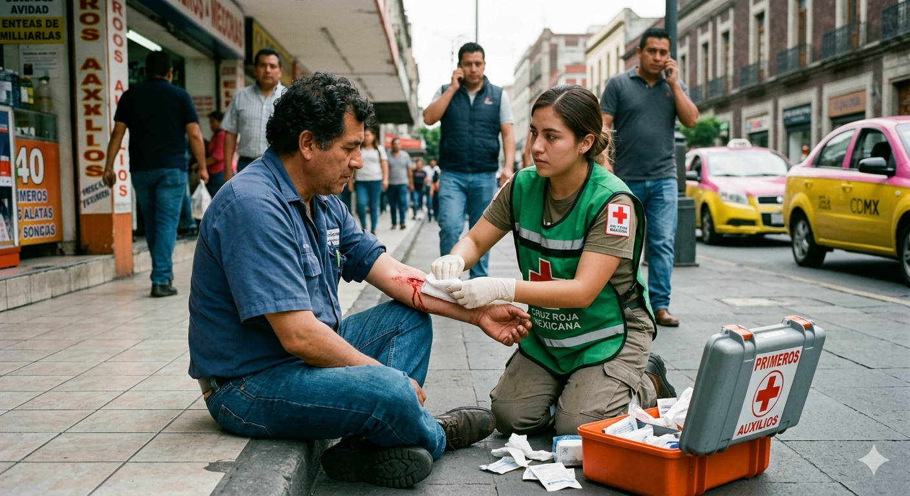

Hemorragias

Pasos clave para el control de una hemorragia
- Presión Directa: aplique presión firme y continua directamente sobre el punto de sangrado durante al menos 15 minutos.
- Elevación:Eleve la extremidad afectada por encima del nivel del corazón para reducir el flujo sanguíneo.
- Vendaje Compresivo:Una vez controlado el sangrado, coloque un vendaje apretado.
- Torniquete:Utilicelo solo en extremidades para hemorragias masivas que no cesan con presión, preferiblemente si se tierne entrenamiento.
- Objetos Empalados:No retire objetos grandes clavados; inmovilícelos y busque ayuda médica urgente.
- Limpieza:Si la herida es leve, lávela con agua y jabón tras detener el sangrado, evitando yodo o alcohol.
Tratamiento Médico Especializado:
- Hemorragias Digestivas:Requiere atención urgente en hospital, incluyendo fluidoterapia (sueros/sangre) y técnicas como la endoscopia para localizar y tratar el punto de sangrado.
- Hemorragia Crítica/Traumática: Uso de antifibrinolíticos como el ácido tranexámico para mejorar la coagulación.
- Trastornos Hemorrágicos: Terapia de reemplazo de factores de coagulación o transfusión de plaquetas.
Volver